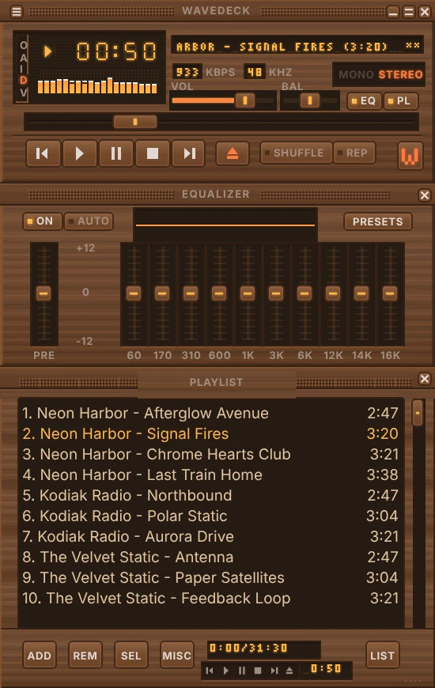
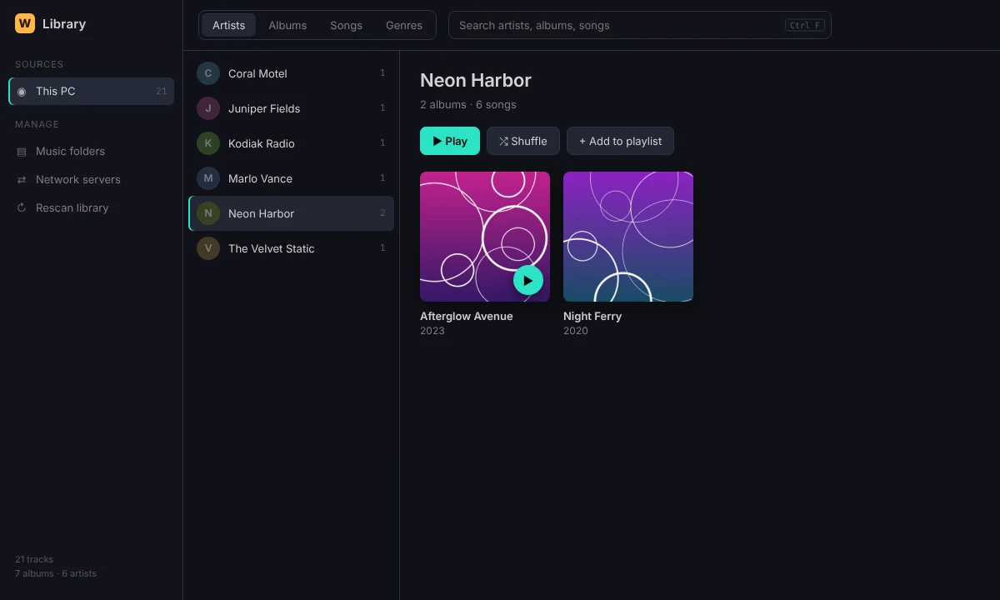
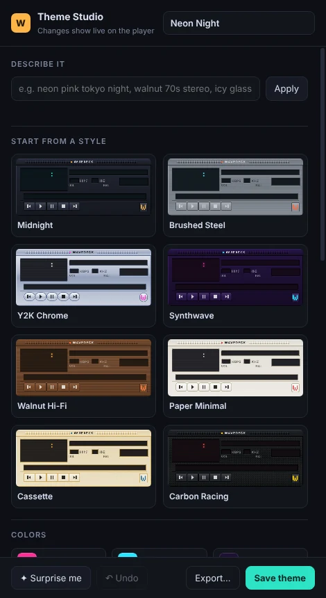
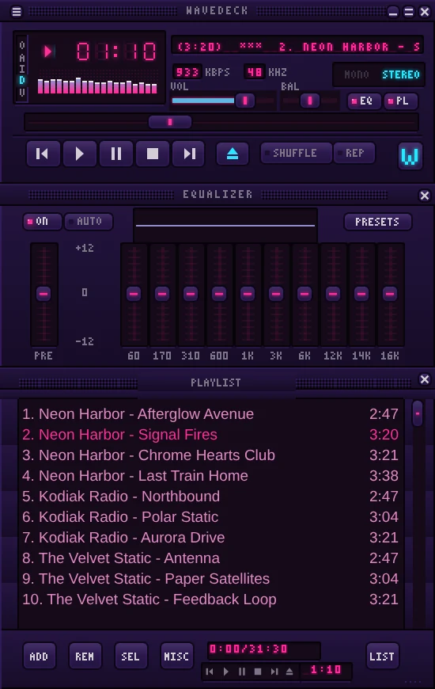

Classic player. Modern library.
Wavedeck is a free music player for Windows. FLAC and MP3, a 10-band equalizer, Milkdrop visualizations and the classic skins you remember, plus a media library that sorts your collection by artist and album and plays straight from your NAS.
Free and open source. Windows 10 and 11, 64-bit.

Every one of these was made in Theme Studio. No drawing involved.
Your collection, sorted by artist, album and song
Point Wavedeck at your music folders: local drives, USB drives or a network share like \\NAS\Music. It reads your tags and cover art and builds a library you can browse by artist, album, song or genre, with search across all of it.
Running Navidrome, Jellyfin or another Subsonic-compatible server? Connect it once and stream from it, no copying files around.
Rescans only touch files that changed, so big collections stay quick.

Make a theme without drawing a pixel
Theme Studio builds a complete skin from choices instead of artwork. Start from a style, pick your colors or pull them from a photo, choose a finish like brushed metal, wood or frosted glass, and set the bevels, roundness and glow with sliders.
Type something like “neon pink tokyo night” to get a starting point, or hit Surprise me. Every change shows up live on the player.
Themes are redrawn at whatever size you scale the player to, so they stay sharp on a 4K screen. Save one and share the small .wdskin file.


Everything you’d expect from the classic
- Sound
- FLAC, MP3, OGG, Opus, WAV and M4A. Preamp plus 10-band equalizer with 18 presets, your own presets, and per-song EQ memory.
- Skins
- Loads classic
.wszskins as-is. Drag one onto the player to apply it. - Visuals
- Spectrum analyzer and oscilloscope in the main window, and a full visualization window with thousands of Milkdrop presets.
- Sizing
- Drag any edge to scale the whole player. Sizes snap to whole pixels so skins never go blurry.
- Playlists
- Drag and drop, reorder, sort, crop, remove duplicates, jump to file, and M3U or PLS load and save.
- Keyboard
- Z X C V B for transport, L to open, J to jump, plus global media keys.
- Plugins
- JavaScript plugins can add visualizers, audio effects and menu items. A “now playing” file for OBS is included.
- Library
- Artist, album, song and genre views, cover art, search, and streaming from your own music server.
Download Wavedeck
Free, no account, no ads.
Windows 10 or 11, 64-bit. The first time you run it, Windows may show a SmartScreen notice because the app isn’t code-signed yet. Choose “More info”, then “Run anyway”.